A TARDIS Mod expansion for Minecraft 1.7.10 that lets you fly back into your own world's recorded past, plus a cockpit, souls, Create-style machines and airships.
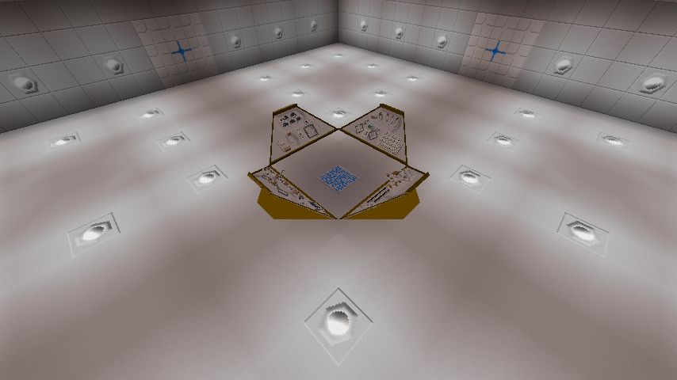
The Cockpit room: all four TARDIS console sides on one desk
The TARDIS Time Travel Addon grew out of one question: what if the TARDIS could really travel in time? The mod records everything that happens in your world. Later you can watch that history play back, then land your TARDIS in it, walk around among the players who were there and change things. Change too much and the past starts to tear itself apart.
Around that core sit a lot of other systems: a proper TARDIS cockpit and navigation console, ME storage built into the TARDIS, soul capture, a full set of rotation-powered machines in the style of Create, and physics-based airships and cars.
Kinetic Dynamo, TARDIS Matrix Builder, power converters, screen modules
Every optional mod is optional. With none of them installed you still get the recorder, kinetics, airships, souls and half-life ores; each mod you add switches on its own extras.
Start here
Getting started
What you need, which mods unlock which features, and a few habits that make the mod easier to use.
Installing
Install Forge 10.13.4.1614 for Minecraft 1.7.10.
Put the tardistimetravel-*.jar in your mods folder. Only keep one copy of this mod in the folder. Old builds were called mymodid-*.jar; delete those, your worlds carry over.
Add any of the optional mods below. The server and every player need the same set.
Optional mods
Mod
What it adds here
TARDIS Mod (needs darkcore)
Cockpit, navigation console, time-travel trips, fuel, Vehicle Bay, Teleport Chamber, Bestiary, time upgrades
The Lord of the Rings Mod
TARDIS icons on the Middle-earth map, map travel, remote trading, Create x LOTR recipes, Faction Mechanism, westerly winds for airships
Applied Energistics 2
Data Vault, ME terminal desk, storage buses through the police box, Kinetic Generator, AE-powered Artron Charger
Waystones as TARDIS destinations, TARDIS Waystone, Quantum Waystone Charm
GraveStone
Your latest grave as a TARDIS destination and LOTR map marker
WAILA, NEI
Control names on the cockpit desk; recipe pages for machines, cells and airship parts
Habits that help
Sneak and right-click with an empty hand on almost any machine from this mod to print its status: speed and stress on kinetic parts, contents of a chute, fuel in the Chronon Tank, charge in a cell machine.
Look up recipes in NEI. This wiki names the main ingredients; NEI shows the exact grid.
The creative tabs are Time Travel Addon, Time Travel Addon Kinetics and Half-life.
TARDIS features unlock with TARDIS level. A feature that needs a level says so in its box at the top of the page.
Most numbers in this wiki are defaults. Server owners can change them in the config (see Commands and config).
Start here
Commands and config
Admin commands, player commands, and where every setting lives.
Settings
All settings show up in game under Mods > TARDIS Time Travel Addon > Config, and most apply at once without a restart.
File
Covers
config/tardistimetravel.cfg
TARDIS (cockpit, Data Vault, LOTR map, RFTools), souls, kinetics, energy converters, recipe viewer, server performance. It also mirrors every TARDIS Mod setting, so a server can be set up in one file.
Checks the rotation solver without touching the world
TARDIS
Cockpit room
A TARDIS room that puts all four sides of the console on one desk, with a flight monitor, wall chart, safe-travel switch and exterior camera.
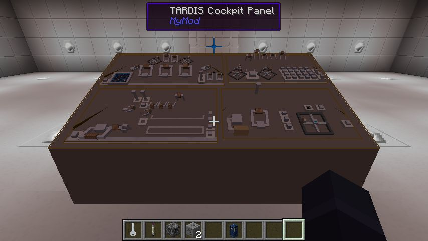
The cockpit desk with the four console sides laid out in a row
The normal TARDIS console makes you walk round it. The Cockpit is an extra room with one desk that carries all four console sides, so you can fly from a single standing spot. Every lever and button on the desk works exactly like the one on the console.
Flying from the desk
Look at a control and click it, just like on the console. With WAILA installed, the control's name shows when you look at it.
During the flight minigame the desk lights up and the control TARDIS wants you to press gets a pulsing blue outline, with a sound cue.
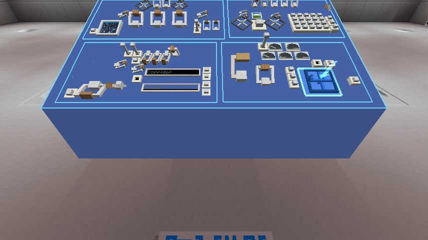
- The monitor at the top shows the status, a progress bar, destination time, position and target. In a time trip its header also shows fuel and the cost of the trip or the escape (red when you can't pay).
- The wall chart against the back wall labels every control on the desk.
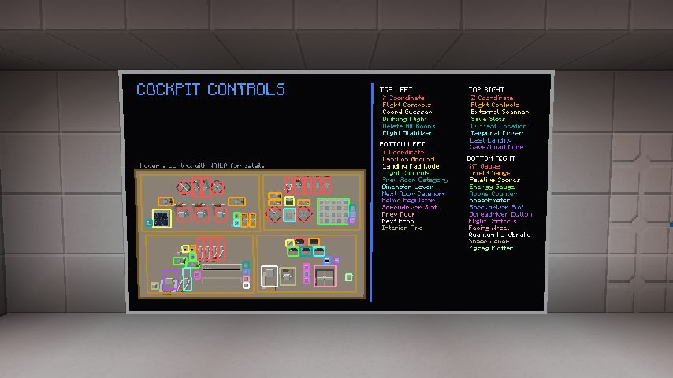
Wall chart naming every cockpit control
Desks around the cockpit
Desk
What it does
Needs
Timeline desk
Opens the timeline to set a destination time; sneak-click sets deep time
Controls check your TARDIS permissions before they act. If you lack the right permission you hear a low note and get a chat message, and nothing happens.
Exterior camera
Click the camera desk and your view moves onto a rail round the top of the police box. Move left and right to circle it; sneak to come back. Your body stays standing at the desk while you watch. The camera closes if the TARDIS takes off.
Room updates
When a new version of the mod adds controls to a room, your existing room gets them automatically the next time it loads. Only the mod's own desk blocks are placed, and only into empty space, so your own builds are left alone.
TARDIS
Navigation console
One screen with tabs for destinations, a live world map, the timeline, an exterior scanner and a flight log.
Open it from the map desk in the Cockpit. It remembers the last tab you used.
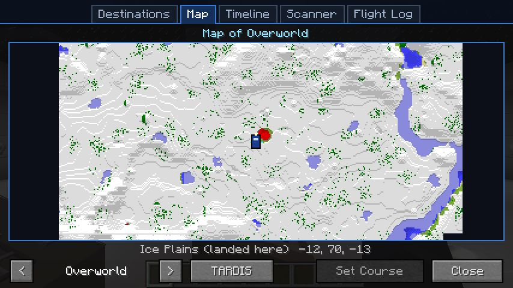
Map tab: click any spot to set a course there
Tabs
Destinations. Your activated Waystones, global Waystones, your latest grave (GraveStone) and LOTR waypoints. With LOTR installed this is the Middle-earth map with markers; other worlds are listed beside it. Pick one and press Set Course.
Map. A built-in map of any dimension the TARDIS can reach. It only shows land that has already been explored, so it never generates new terrain. Click a spot to set a course; the TARDIS finds the ground there. In the Nether and other roofed worlds a height slider picks the layer to view, with solid rock drawn darkest so caves stand out.
Timeline. Pick a moment in your world's history as the destination time. See viewing the past.
Scanner. What is outside the doors: biome, time, weather, light, ground, creatures and players within 16 blocks, hazards, artron energy and rooms.
Flight Log. The last 40 places you landed, with visit counts. Set a course back, show it on the map, or forget it.
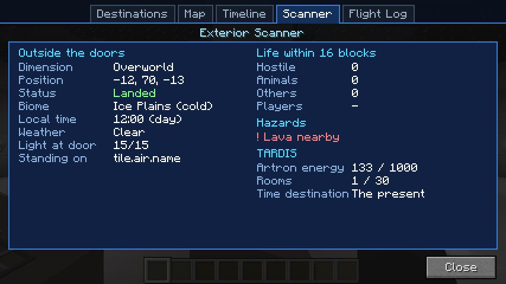
The scanner tab
How a course is set
The TARDIS turns its own coordinate levers to get as close as it can, usually within about 15 blocks, and chat tells you how far off the landing will be. When landed it can set the course relative to where you are, which is often more exact. Height is always set exactly.
LOTR map icons
With LOTR installed, TARDISes in Middle-earth appear as icons on the LOTR map, even while flying. You see your own, and any TARDIS whose owner gave you the See on map permission. Select one and press LOTR's fast travel key to transmat inside (door locks apply, and there is a cooldown).
TARDIS
Data Vault and ME
Applied Energistics storage built into the TARDIS, with no drives or cells needed, and ME links through the police box.
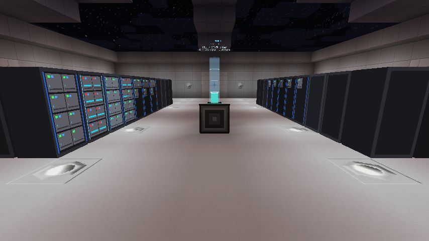
The Data Vault room
The vault
Add the Data Vault room to your TARDIS. Its storage is part of the TARDIS itself: 25,000 items per TARDIS level, with no drives or cells. A gauge in the room shows how full it is, and the Vault Expander time upgrade doubles it.
The room has an ME controller on a console plinth, a status desk and a terminal desk. Click the terminal desk to open a normal ME terminal on the TARDIS network.
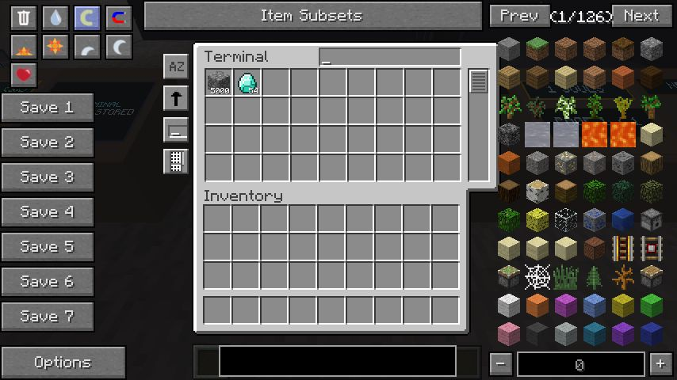
Using the terminal desk
ME through the police box
A Storage Bus on the outside of the police box sees everything on the TARDIS network.
An Exterior Port inside sees the network touching the police box outside.
Both can be used at once without loops.
Open roundels: AE2 blocks touching an open roundel join the TARDIS network.
AE2 blocks placed on a console plinth become console versions that can't be broken or wrenched.
Power
Kinetic Generator: turns rotation into AE power.
Artron Converter: turns TARDIS artron into AE power, 2,000 AE per artron.
TARDIS
Vehicle Bay
Take a parked car or airship into the TARDIS and set it down again wherever you land.
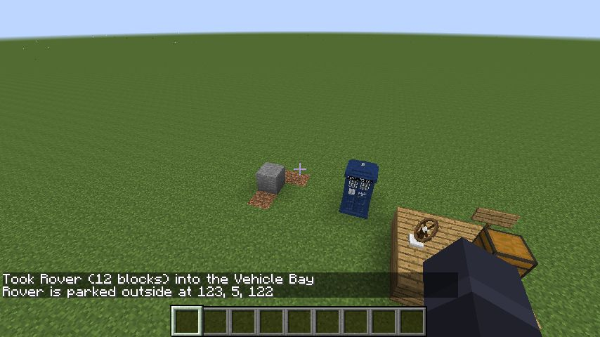
A vehicle deployed next to the police box
Building the bay
Craft the three desk blocks and place them in a row anywhere inside the TARDIS, left to right:
Take In (kontron, Steering Wheel, ender pearl)
Bay screen (adds a glass pane). Click it to pick a stored vehicle.
Deploy (adds a piston)
Using it
Take In grabs the parked vehicle whose Steering Wheel is nearest the police box, within 8 blocks. For airships it takes a ship whose centre is near the box (up to 16 blocks above), as long as the ship is nearly still. Nobody can be driving it.
The bay holds 8 vehicles. A vehicle carrying a sign is named after the sign's first line; a ship uses its Hull Plate name.
Deploy sets the selected vehicle down beside the police box wherever the TARDIS has landed, in any dimension and even in the past, facing the way it did when taken in. Ships come out as blocks; reassemble them by hand.
TARDIS
Waystones and graves
Fly the TARDIS to your Waystones and your last grave, and warp into a TARDIS from any Waystone.
Waystones
Your activated Waystones and every global Waystone are destinations in the navigation console, in any dimension. The TARDIS lands in front of the stone.
TARDIS Waystone (Waystone + kontron): place it inside your TARDIS. Warping to it from outside takes you in through the owner's TARDIS door; from inside, you arrive next to the stone. Door locks apply.
Quantum Waystone Charm (see half-life ores): a pocket warp to any of your Waystones.
Graves
With GraveStone installed, your latest grave becomes a destination called "your name's grave", and with LOTR it gets a headstone marker on the Middle-earth map. Only you see your own grave. The marker clears once the grave is broken.
Time travel
How time travel works
The mod records your world as you play. Later you can watch that history, or land the TARDIS in it and change it.
The recorder
From the moment the mod is installed, the server writes down every block change in the Overworld and Middle-earth: who did it, when, and what it was before. It also records where players walked and what they held, the mobs near players, weather, and what was in chests when they were closed.
You don't have to do anything for this. It costs a few megabytes of disk per hour of play and is checked against the world at every autosave. TARDIS interiors are never recorded.
History starts when a chunk is first generated. The world before you installed the mod can't be visited, except through deep time, which goes back before the world existed.
Three ways to use history
What it is
Read
Look
Watch the past play back around you, with ghosts of the players who were there. Nothing changes.
What you change in the past carries into the present, unless history changes that block again later.
Taking things the future needed creates paradox. Too much and the past collapses with you in it. See Paradox.
Items you take are usually paid for by quietly removing what the future made from them. See Item ripples.
Trips cost fuel, more the further back you go. See Fuel.
Players can protect their bases from time travellers with a Temporal Anchor.
Time travel
Viewing the past
The timeline, the Chrono-Glasses and solid ghosts of the players who were there.
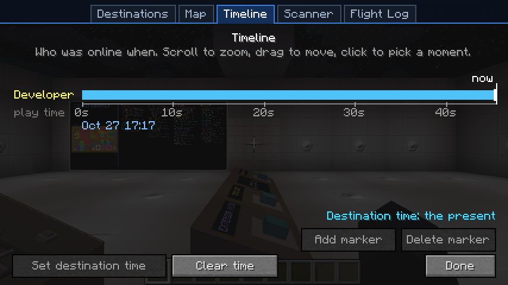
The timeline: login bars for each player, with empty stretches squeezed out
The timeline
The timeline shows a bar for each player's time online, with the server's runs underneath. Long stretches when nobody was online are squeezed down so you can see the busy parts.
Scroll to zoom (from 1 second up to 10 days per step), drag to pan, click a moment to pick it.
View this moment shows the past right where you stand.
In the TARDIS, the timeline sets the destination time instead.
Trips appear as purple hatched bands with a line back to where they left. You can add named markers (red dotted lines).
Chrono-Glasses
A helmet made from gold, glass panes and a clock. While wearing them:
Key
Does
K
Open the timeline
[
Rewind (press again to go faster)
]
Fast-forward
\
Pause
The past is drawn over the world around you for 4 chunks (7 with the Chrono-Glasses upgrade from half-life ores). You still walk and click in the present. Playing forward into the present ends the view, and so does taking the glasses off.
Ghosts
Players who were there in the past appear as solid ghosts, with their skin, armour and held items, walking where they walked. Punching one makes it glitch. Mobs near players are replayed too.
Time travel
Trips to the past
Land the TARDIS at an earlier moment, walk among the recorded players and change what happened.
Setting off
Pick a destination time on the Cockpit timeline desk or the navigation console.
Set a place as normal and take off. The trip needs fuel in the Chronon Tank.
The TARDIS stays in flight until the land around the landing spot is ready, then lands in the past.
If the flight is cut short you land part way back in time too. The TARDIS always lands on a spot that hasn't changed since that moment, so it never appears inside something built later.
What the past is like
It's a copy of your world at that moment, and time runs forward from there. Recorded players walk their paths, doors open, redstone pulses and sounds play.
When the past catches up with the moment you left, everyone is brought home.
No new mobs spawn. Recorded mobs turn real when you come close or a hostile one spots you; leave them alone for a while and they walk back to their recorded path and fade back into the replay.
If you build in a recorded player's way, they walk round it, or dig through blocks you placed, and then catch up with their recording.
Chests let you take only what the chest still holds all the way to the present. With item ripples on you can take more.
Ender chests, portable ME storage and LOTR pouches don't open in the past.
Breaking blocks the future needed makes paradox. Drops of those blocks are echo items: they glow, can't be placed, and fade when you leave.
Crews
Everyone who travels in one TARDIS is a crew. The crew shares one past and one paradox meter. Other TARDISes landing at the same time get their own separate past; changes from earlier pasts flow forward into later ones and into the present. The TARDIS won't take off while a crew member is still outside in the past and online.
Coming home
Take off from the past to escape. Escaping costs fuel that grows with the paradox level. If you die in the past you respawn in the present.
Time travel
Deep time
Travel to before your world was created, into freshly generated land that is yours to strip.
Setting a deep-time destination
Sneak and right-click the Cockpit timeline desk to cycle through 1, 10, 50 and 100 Minecraft days before creation, then off. Setting a normal time clears it.
What is different there
The land is generated fresh from your world's own generator, with trees, ores and mod world generation.
Primordial Shards, the tier 4 half-life ore, only exist here.
Nothing you do there reaches the present and nothing becomes paradox. What you carry home is real.
There is no history to replay, so no ghosts and no moving playhead.
Limits
Depth
Fuel that reaches
Up to 10 days
Quantum Fuel (further with Reach Extenders)
Up to 100 days
Primordial Fuel
The Deep Time Hullupgrade wears down one point a minute. When it runs out, the TARDIS is pulled back to the present with everyone in that deep time.
Time travel
Paradox
Every past has a paradox meter from 0 to 100. Duplicating what the future needed fills it, and at 100 the past collapses.
What raises paradox
Duplicating: breaking a block that a player later breaks or takes in the recorded future. You would end up with the item twice. The charge depends on what the drops are worth: dirt and stone are almost free, diamonds are not.
Contradicting: breaking a block that later changes on its own, or building where a player later builds.
Explosions count once for the whole blast.
Free: anything history never touches again, and blocks your crew placed on this trip. Each trip also has a small allowance before charges start, so one diamond ore is usually free. After that each duplicate costs more than the last.
You get a warning first. A costly action is refused once with its price in chat. Do it again within a few seconds to go ahead.
What paradox does
Level
Effect
30
Recordings glitch
50
Time stops. The meter no longer heals on its own.
60
Changes stop reaching the present; blocks start fading
70, 80
Chunks shift
90
Chunks are erased
100
Collapse. Everyone in the past dies and the police box is lost (you can summon it again).
Below 50 the meter slowly heals. Players who cause paradox also carry instability for a few hours, which keeps their next trip's meter from starting at zero. Large charges hit back with nausea, slowness and damage.
Keeping it down
Flip the Safe travel switch on the Cockpit desk: paradoxical actions are refused instead of counted.
Put duplicated items back, or place the broken block again, to undo the charge (see item ripples).
Time upgrades: Paradox Dampener (halves gains), Paradox Lattice (raises the collapse point), Escape Capacitor (one emergency rescue), Echo Containment Field (keeps one echo stack real).
Rifts open in high-paradox pasts. Right-click one for 1 to 3 Chronons of emergency fuel, at the cost of a little more paradox.
Time travel
Item ripples
Take an item from the past and the future loses what was made from it, as little as possible.
If you take 10 iron from a chest in the past, the player who later took that iron never had it. Ripples work out what they did with it and quietly undo just that: the pickaxe they crafted from it, the rails they placed, the iron sitting in their chest now.
How it is worked out
The mod keeps a ledger of what players craft, place, store, toss and eat, and watches items move between chests, hoppers, furnaces and machines. When you take something, it follows the items forward:
Crafted into something: the craft is unmade; the ingredients come back and the result is removed instead. A tool that used only part of it is worn down.
Placed as a block: the block is removed.
Stored in a container or passed through machines: taken from where it ended up, or from what the machine made with it.
Otherwise it comes out of the player's inventory, then their TARDIS storage.
Only the part that can't be traced costs paradox. Sometimes you can pay for it with other items you carry of the same value.
The first time you take or break something, you get a summary of what will change. Do it again to go ahead. The changes apply when your trip ends; players who are offline get them when they log in.
Undoing a ripple
Put the same items back in the same container on a later trip to the same moment or earlier.
Place a broken block back where it was.
/ripple list shows your ripples; /ripple undo last takes back your most recent one, if the server allows it.
Time travel
Fuel
Chronons and stronger fuels power trips into the past; the Artron Charger turns machine power into TARDIS energy.
Artron is scarcer
With this mod, the TARDIS regenerates artron energy at a quarter of the normal speed, and flights cost three times as much. You can top it up with an Artron Charger (redstone, kontron, shafts, a basic artron battery): drive it with rotation, RF (RFTools) or AE power (AE2). The conversion is lossy on purpose.
Time fuel
Trips into the past burn fuel from the Chronon Tank, placed inside the TARDIS. Hoppers can feed it, a comparator reads it, and an empty-hand right-click prints what is in it. The tank burns the cheapest fuel that reaches far enough.
Fuel
Reaches
Worth
Made from
Chronon
24 hours back
1
Chronosteel and kontron mixed over an artron battery (4 per mix)
A trip costs more the further back you go: about 18 for one day back alone, 33 for a month. Each extra player in the interior adds half again.
Escaping (taking off from a past) costs more the higher the paradox: 2 at zero, 12 at paradox 50.
The Cockpit monitor shows your fuel against the cost. The TARDIS won't take off if you can't pay.
A Chronon Condensertime upgrade slowly turns artron into Chronons while landed. Fuel Efficiency Couplings cut trip costs.
Time travel
Anchors and the Paradox Machine
Protect your base from time travellers, and rewind or rewrite an area with stored energy.
Temporal Anchor
Place a Temporal Anchor (obsidian, compass, irradiated steel, Chronal energy) to protect the 3x3 chunks around it in every past of that dimension. Time travellers there can't break, place, open machines, use buckets or blow anything up, and a TARDIS without one of your trusted players aboard can't land there.
Share it with a friend by right-clicking it with a Name Tag named after them.
You get an alert when someone visits your protected area in the past.
Only you can break it.
A Deep Anchor (adds a nether star and Quantum energy) also covers deep time.
Paradox Machine
Covers the 5x5 chunks around it and runs on a Chronal cell (clock, diamond block, eye of ender, irradiated steel).
Mode
Does
Restore
A redstone pulse puts the area's blocks back to how they were some minutes ago. Right-click with a clock to move that point by 5 minutes.
Collapse
A second pulse undoes the last restore.
Rewrite
While on, changes made in the past in this area win over what happened later.
TARDIS blocks, anchors and machines are never touched.
Half-life ores
Half-life ores
Four ores whose stored energy drains away as the world ages, so the richest deposits lie in the past.
Half-life ores hold energy that halves over time, counted from world age. A fresh vein is rich; the same vein a few weeks later is nearly spent. Travel back to a time when it was fresh and you can drain it then. That is the reason to time travel for resources.
They generate in the Overworld and Middle-earth, in new chunks only.
Mining with cells
You can't mine these ores with a pickaxe; that leaves depleted rock. Instead, right-click the ore with an energy cell to drain everything it holds right now.
Cell
Holds
Lead-lined
5,000
Shielded
100,000
Stasis
5,000,000
Quantum
250,000,000 (needed for tiers 3 and 4)
Upgrade a cell by crafting it into the next one; it keeps its charge. In the past, ore that is already gone in the present gives nothing.
Crafting with energy
Recipes that use energy take a charged cell in the grid. The cell comes back drained by the cost. NEI shows these on a Cell Crafting page.
Tier 1 (Radiation): Irradiated Steel, Geiger Counter (clicks near ore; right-click names the nearest within 16 blocks and its value), Rad Lamp, Radioisotope Heater (heat for mixers), Decay Generator (turns Radiation into RF, AE or artron).
Tier 2 (Chronal): Time Accelerator (speeds up crops, furnaces and machines in a 5x5x3 area while it burns Chronal energy; redstone stops it), Stasis Crate (keeps 9 cells), Chrono-Glasses upgrade (wider past view).
Tier 3 (Quantum): Entangled Chest (a linked pair that share 27 slots across any distance or dimension), Quantum Waystone Charm (pocket warp to your Waystones).
Tier 4 (Primordial): Primordial Core (gives your TARDIS a level), Genesis Seed (regenerates the chunk you stand in; operators only by default).
Sixteen TARDIS upgrades powered by half-life energy, for the engine slots or the Upgrade Rack.
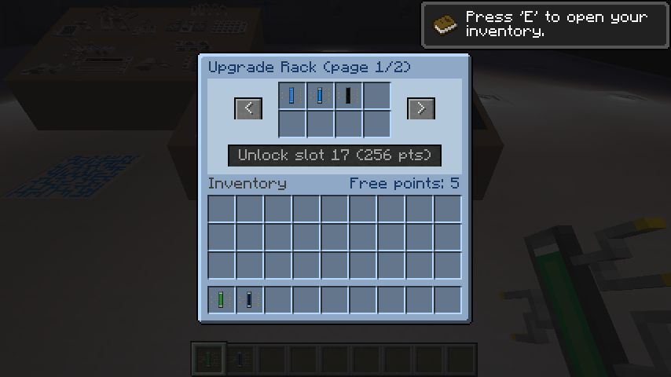
Upgrade Rack in the Cockpit
Time upgrades go in the TARDIS engine's upgrade slots or in the Cockpit's Upgrade Rack. Each is made from an upgrade template, kontron, parts and half-life energy. Some wear out and crack; repair them with kontron and energy.
Upgrade
Effect
Chronon Condenser
While landed, turns 500 artron into 1 Chronon a minute
Landing Stabiliser
Lands in the past twice as fast, finds a landing spot further out
Temporal Sensor Array
When you set a time, shows ore yields then, other crews there and the paradox you'd arrive to
Fuel Efficiency Coupling
-15% trip fuel each (up to 2)
Reach Extender Mk I / Mk II
Fuel reaches 1.5x / 2x further back
Stasis Bay
Stops energy in cells from decaying
Escape Capacitor
One-shot rescue: the crew is pulled aboard and the TARDIS returns home free
Paradox Lattice
Collapse happens 10 points later (up to 3)
Echo Containment Field
Your biggest echo stack stays real once per trip
Time Dilation Field
In flight, machines and crops in the TARDIS run faster
Capture creatures in a Soul Nexus, keep them in your TARDIS, show them as holograms and trade with LOTR traders from afar.
Soul Nexus
Craft 4 from glass, soul sand and an ender pearl. Use an empty nexus on a creature to store it, name, health and all. A LOTR trader keeps its trades and a hired unit keeps its owner. You can't capture other players' pets or units someone else hired, and bosses only if the server allows it.
Machines
Soul Snatcher captures creatures standing on or just above it into the empty nexuses inside.
Soulcarnation releases the creature from a filled nexus on top of itself and hands back the empty one.
Both take hoppers and stop with a redstone signal.
Teleport Chamber
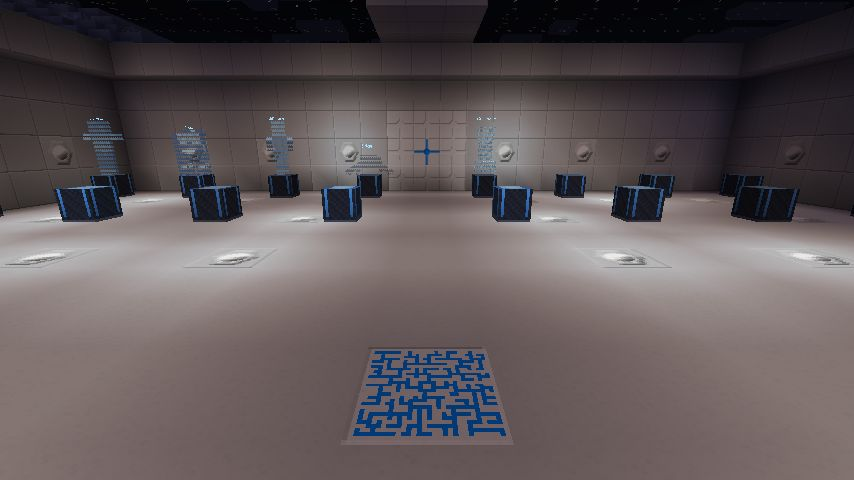
Teleport Chamber holograms
A TARDIS room with a quartz dais and a desk:
Desk control
Does
Absorb outside
Captures every creature in the 16-block cube around the police box (TARDIS level 10, landed)
Absorb room
Captures every creature in the room
Storage
16 filled nexuses and a stack of empties
Release in room / outside
Lets them all out
The 16 pedestals along the walls show a blue hologram of each stored creature.
Soul Bestiary
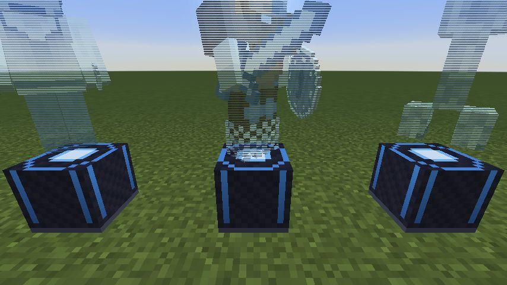
Bestiary pedestals
A room with 12 hologram pedestals around a desk. The desk pages through your soul vault (4 pages of 54).
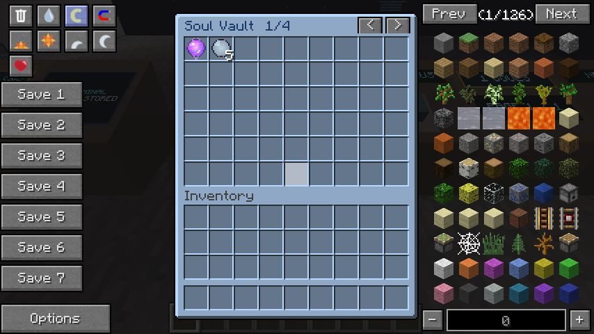
Click a pedestal for details: health, LOTR faction, kills and trades. From there you can deploy the creature outside the TARDIS to stand guard.
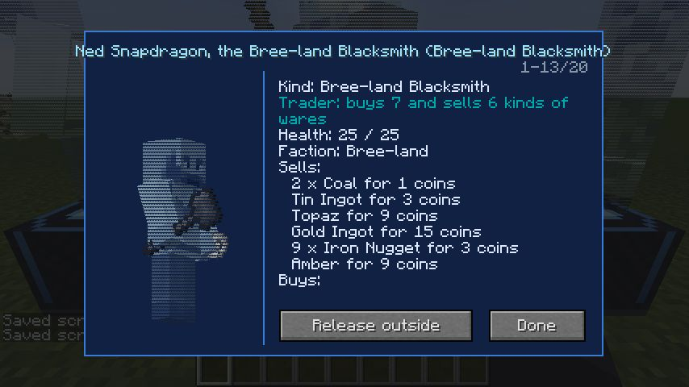
Bestiary details with a LOTR trader's offers
Remote trading
With LOTR, a stored trader has a Trade button (TARDIS level 8). The normal LOTR trade screen opens, with LOTR's own prices, alignment rules and coins, even while the TARDIS is flying.
Kinetics
Power and machines
Rotation power in the style of Create: sources, shafts and cogs, stress, and the machines that use it.
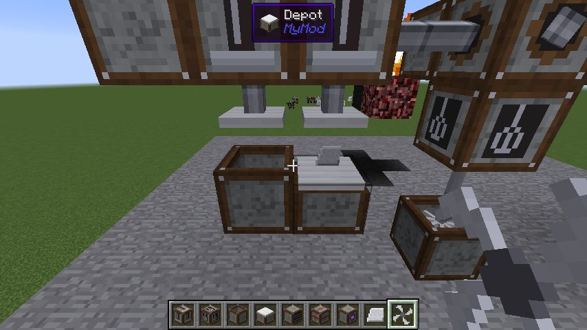
A row of kinetic machines
Kinetics is a backport of the ideas in the Create mod to 1.7.10, with our own textures and models. Machines run on rotation: a source turns, shafts and cogs carry it, and machines use it.
Speed and stress
Speed is measured in RPM, up to 256. Direction matters.
Every source gives a stress capacity (SU). Every machine uses stress equal to its cost times its speed. Go over capacity and the whole network stops (overstressed) until you remove load or add sources.
Two sources fighting each other, or gear ratios that don't add up, jam the network.
Sneak and right-click any part with an empty hand to see its speed and stress.
Sources
Source
Speed
Capacity
Hand Crank
32 RPM while cranked (sneak reverses)
256 SU
Water Wheel
8 RPM per side with flowing water
512 SU
Windmill Bearing
0.25 RPM per wool block, up to 16
64 SU per wool
Furnace Engine
32 RPM on furnace fuel
1,024 SU
Field Engine
64 RPM on furnace fuel (Blaze Cake doubles capacity)
2,048 SU
Artron Motor (TARDIS)
64 RPM, uses 1 artron a second
4,096 SU
Creative Motor
Any
Unlimited
Moving power around
Shaft, Cogwheel and Large Cogwheel (small to large doubles or halves speed), Gearbox (sides reverse), Clutch and Gearshift (redstone), Twin Gearshift and Step Transmission (x0.3 to x4 by redstone level), Casing, and Belts that join two shafts up to 21 blocks apart and carry items and mobs.
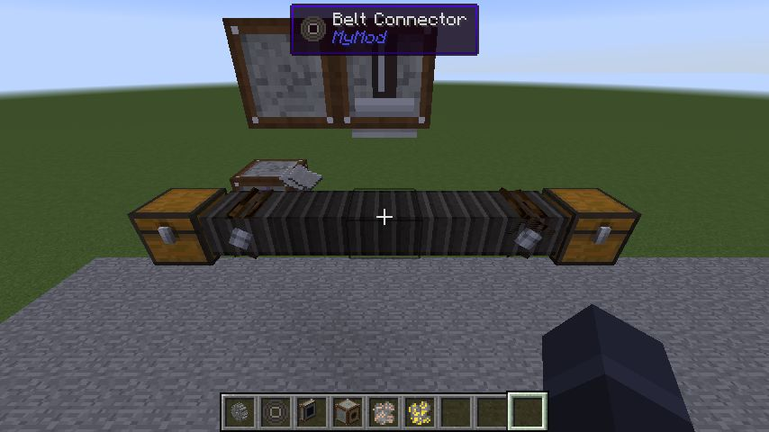
Belt carrying items
Machines
Machine
Does
Millstone
Grinds items
Crushing Wheels
Two wheels one block apart crush ore into 2 crushed ore
Mechanical Press
Presses ingots into sheets; compacts items in a basin
Mechanical Mixer + Basin
Any shapeless recipe with 2+ ingredients, plus mixing recipes; heat below for heated mixing
Encased Fan
Water in front washes items, lava or fire smelts them
Mechanical Saw
Cuts blocks into shapes; fells whole trees
Mechanical Drill
Breaks the block in front
Deployer
Uses its held item on blocks or items
Funnels, Chute, Depot
Move items in and out of inventories
Screw Shaft / Screw Cog
Carry items along their axis, uphill too
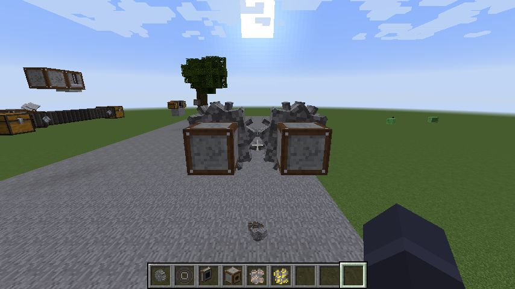
Crushing wheels
Create-style crafting
Andesite alloy, flour and dough, rose quartz, electron tubes, sandpaper, and sequenced assembly of Precision Mechanisms with a deployer over a depot. With other mods installed you also get crushing and mixing recipes for AE2 (certus, fluix), TARDIS lab recipes in a basin over an artron battery, and LOTR.
Kinetics
Moving structures
Bearings, pistons and gantries that pick up blocks and move them, with you riding on top.
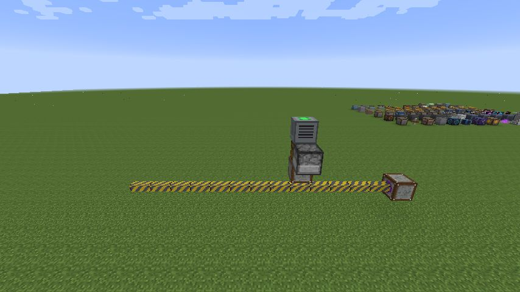
Gantry carriage moving a load along its rail
Movers
Mechanical Bearing: turns the structure attached to its face; stops at a quarter turn.
Mechanical Piston: pushes and pulls; piston poles behind it set the reach.
Gantry Shaft and Carriage: the carriage and its load slide along the rail while it turns, in a direction set by the spin, until the end or an obstacle.
A mover takes the block on its face and everything joined to it, up to 512 blocks. It never takes air, liquids, unbreakable blocks, belts, or other mods' multiblocks (AE2, TARDIS). Natural ground like dirt and stone is only taken if it is the first block. Protected land stays protected.
Riding
Stand on top of a moving structure and it carries you, even while it turns, with no fall damage. Chests, furnaces and other blocks keep their contents and drawing while they move.
Chutes
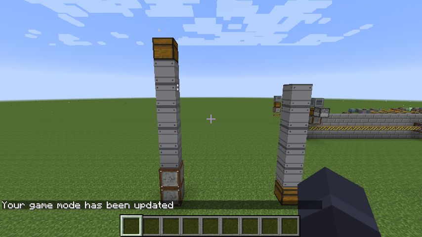
Items falling through a chute into a chest
A Chute moves one stack down into the chute or inventory below, or drops it out the bottom. An Encased Fan under the column blows items up instead. Drop items on top of a chute and it takes them in.
Kinetics
Redstone Links and vehicles
Wireless redstone, a handheld remote, and Steering Wheel vehicles that drive, mine and carry working machines.
Redstone Link
A plate that sends or receives redstone without wires, within 256 blocks. Its frequency is two items: click the upper and lower half with an item to set them. Sneak with an empty hand to switch between send and receive.
Linked Controller
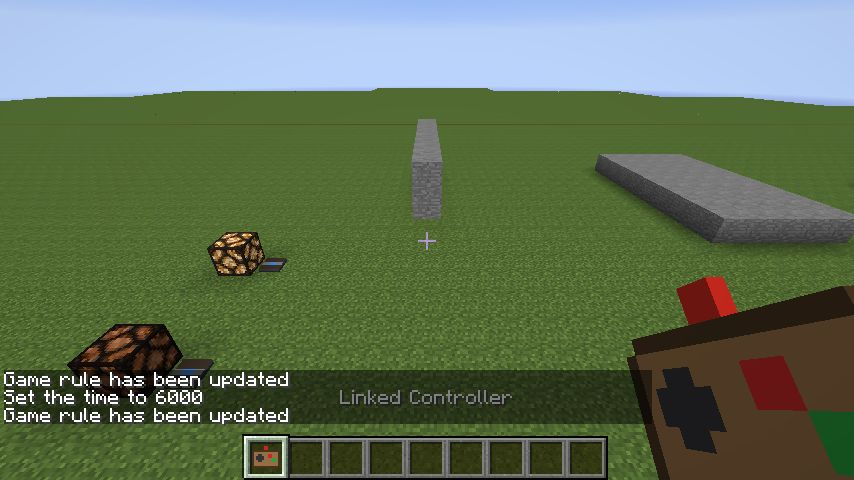
The Linked Controller lighting a receiver
A handheld remote with six buttons mapped to your movement keys (forward, back, left, right, jump, sneak). Sneak-click to bind each button to a frequency, then right-click to take over your movement keys and press buttons instead of walking.
Steering Wheel vehicles
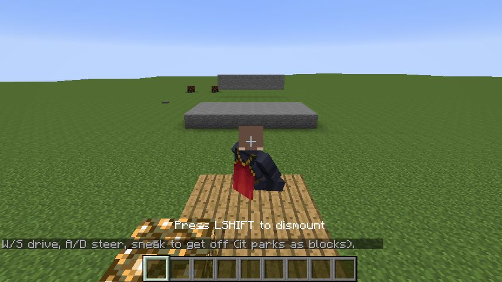
Driving a vehicle
Build something, put a Steering Wheel on it and right-click. Everything joined to the wheel, except the ground, lifts off and you take the seat.
W/S speed, A/D turn. Climbs one-block steps, stops at walls. Sneak to get out; it settles back into blocks.
Vehicles carry working machines. A Furnace Engine on board, fed from the vehicle's chests, drives the wheel through shafts; levers and clutches on board still work. Click a carried lever, chest or engine to use it.
Drills facing forward mine through the blocks ahead as you push into them, and drops go into chests on board. Cover the whole front with drills.
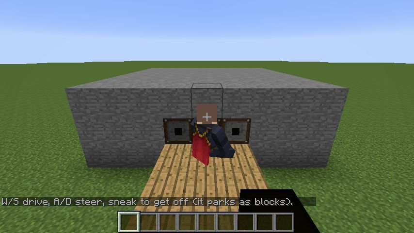
A mining vehicle tunnelling into a hill
A build with tires becomes a car instead, with real suspension and steering.
Kinetics
Create x LOTR
Machine recipes for Middle-earth: metal sheets, crystal powders, fan magic, barrel brewing and superheated alloys.
New items and blocks
Sheets of every LOTR metal (bronze, copper, tin, silver, orc, Uruk, black Uruk, Morgul, dwarven, blue dwarven, elven, galvorn), pressed from ingots.
Decorative dwarven, elven, orc and Gondor casings, and the Ent Water Font.
Naurite Burner: burns embers to superheat a basin above it.
Grinding and crushing
Naurite, quendite and gulduril become ember, starlight and shadow. Gem ores crush to rough gems (50% bonus), which sandpaper on a deployer polishes into two. Coins, treasure, rings and goblets grind back to nuggets. Every LOTR flower that crafts into dye mills into double.
Fan modes
Catalyst in front of the fan
Mode
Example
Hearth
Smoking
Food, grapes to raisins, pipeweed
Morgul torch
Haunting
Dirt to Mordor dirt, quendite to gulduril
Elven torch
Hallowing
The reverse; rotten flesh to leather
Ent jar or Ent Water Font
Ent growth
Saplings to logs, seeds to crops
Mixing
Brewing: every LOTR barrel drink mixes in a basin from its 6 ingredients and 3 water buckets into 4 drinks. Cold makes light drinks, heat makes strong.
Superheated (basin over a lit Naurite Burner): Uruk steel, black Uruk steel, Morgul steel, elven steel, ithildin, blue dwarven steel and dwarven steel.
Hithlain, gunpowder, hobbit pancakes and more. A lit LOTR forge under a basin does alloy recipes.
Saw and Faction Mechanism
The Mechanical Saw makes every faction-table block (Gondor bricks, pillars, stairs) without the table. The Faction Mechanism crafts any faction table recipe from a basin; a filled Soul Nexus sets the faction.
Airships
Building a ship
Ships are real blocks that fly as one rigid body: machines, chests and redstone all keep working on board.
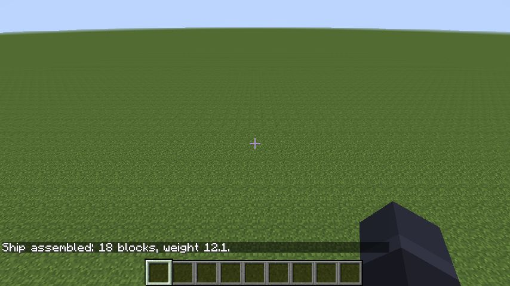
A balloon ship lifting off
Airships are a backport of Create Aeronautics, with our own names and models. A ship is a real build: every block on it stays a working block, so furnaces burn, chests open and redstone runs while you fly.
Assembling
Build your ship, all blocks touching. Use Ship Resin on two blocks to glue a gap, or twice on one block to let it join diagonal neighbours.
Place a Hull Assembler on it and right-click. Everything connected lifts off as one ship.
Right-click the assembler again to turn it back into blocks. The ship has to be within 25 degrees of upright, and it snaps to the nearest quarter turn.
You can walk on the deck, build on it and click its blocks while it moves.
Weight and balance
Every block has a weight: light for wool and canvas, heavy for metal. Slabs, stairs, fences and panes weigh less than full blocks. All 693 LOTR blocks have their own weights.
The Hull Chart prints the ship's weight, lift and a top-down plan showing the centre of mass (red) and centre of lift (aqua). Keep them together or the ship tips. Flight Goggles show a readout of the nearest ship.
Ships far from every player freeze until someone comes near.
The Vehicle Bay can store a ship inside your TARDIS.
Airships
Lift and thrust
Make a ship rise with Aerolite or hot air, and push it with rotors, sails and fans.
Lift
Aerolite is a light block that floats. Each block holds up 10 weight, and enough of it makes a ship hover, never rise past that. Smelt Aerolite Blend (clay, ender pearl, glowstone dust). Put Aerolite above the centre of mass, or the ship rolls over.
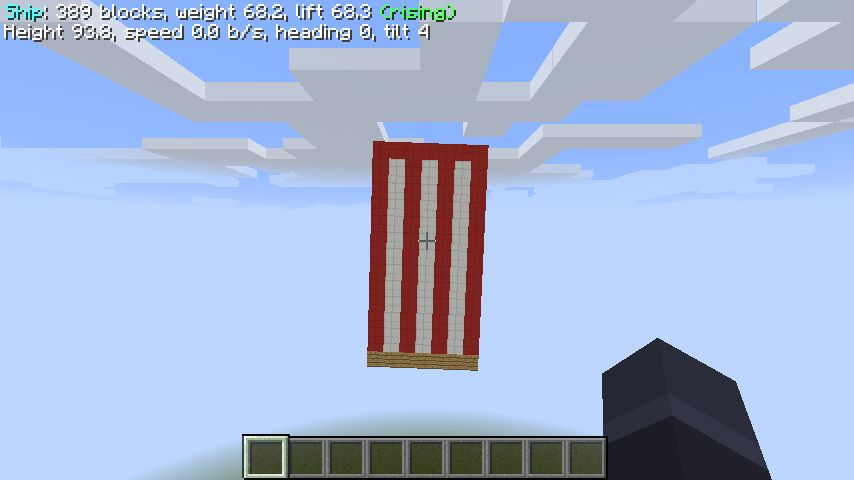
A hot-air balloon made of canvas
Balloons give real climb. Put a Balloon Burner (furnace fuel) or a Lift Vent (next to a burning Furnace Engine) under a closed envelope of blocks. Balloon Canvas is the light material for it. The air inside heats up with the redstone signal on the burner (0 off, 15 full), and lift grows with the envelope's volume and heat.
Air gets thinner with height, so balloons, rotors and sails all weaken as you climb. In Middle-earth the air reaches higher, and Utumno has none.
Thrust
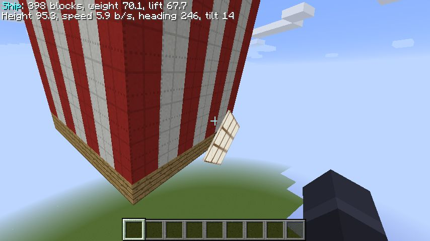
A rotor of sails on a Rotor Mount
Rotor Mount: drive it with rotation. Sails joined to its front become blades. More sails and more RPM, more thrust.
Trim Rotor: thrust set by a redstone signal. Gimbal Rotor: always pushes upward.
Encased Fan on a ship pushes too; a Thrust Nozzle in front doubles it.
Sails and Fins catch the air. In Middle-earth the west wind blows east, stronger with height and in storms.
Controls
Helm: right-click to take the controls. It outputs redstone: throttle ahead, rudder left and right, up on Space, down on sneak. Wire it to your engines, gearshifts and burners.
Throttle: right-click up, sneak-click down; powers all sides.
Mover's Rod (creative): drag a ship around by a point.
Airships
Instruments
Redstone sensors that know where the ship is, how fast it moves and which way to steer.
Every instrument outputs a redstone signal from its front, so you can build an autopilot from them.
Instrument
Signal
Altitude
Height above a set base
Velocity
Speed in the direction it faces
Gimbal
Tilt toward each side
Range Eye
How close the first block it sees is (15 = touching, 1 = 30 blocks)
Beam Eye
Lit when a Beam Lamp shines on it
Range Receiver
Distance to a Redstone Link on its frequency
Bearing Receiver
Which way to turn to reach that link: ahead, left, right, and distance at the back
Chart Table
Bearing to spawn (compass) or a map's centre
Charge Cell
Fades slowly after its input stops
Signal Coil
Holds a pulse and drains slowly
Also on the bridge
Link Keyboard: a desk that holds a Linked Controller. Sit at it to press its six buttons with your movement keys.
Hull Plate: right-click with a renamed item to name the ship. Goggles and the Vehicle Bay show the name.
Airships
Joints and docking
Tie ships together or to the ground, build moving arms, and dock two ships.
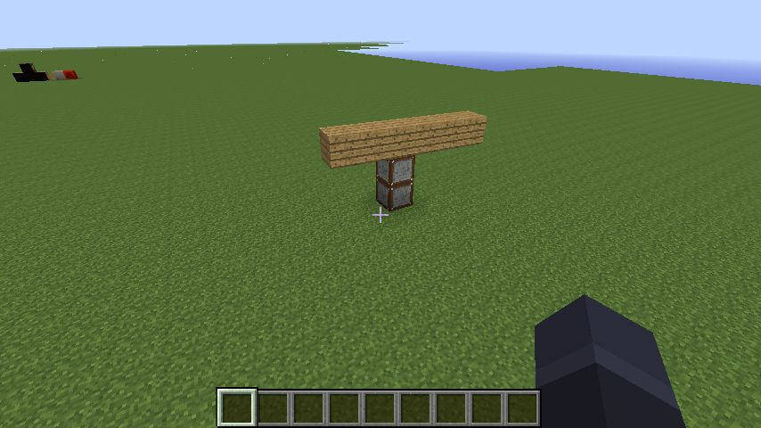
A swivel joint turning an arm
Part
How to use it
Tether
Use on two blocks up to 48 apart (ship or ground). Pulls only when stretched. Sneak-use to remove.
Coil Spring
Like a tether, but springy.
Grapple Launcher
A redstone pulse fires a tether up to 48 blocks; the next pulse lets go. Hold power to reel in.
Swivel Joint
Right-click to turn the blocks on its face into their own hinged part. Its shaft speed sets the angle. Right-click again to put them back.
Twist Spring
Like a swivel, with a spring back to straight (stops at 45 degrees).
Grab Handle
Right-click to hang from it, wherever it goes.
Docking
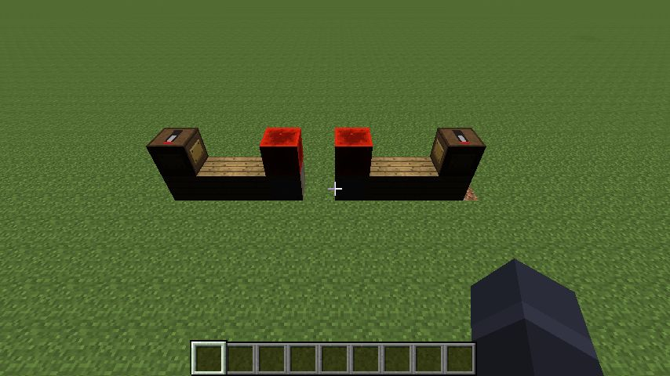
Two ships docked with Dock Clamps
Power a Dock Clamp facing another clamp within 4 blocks on another ship. It steers them gently together and locks them at one block. Remove power to let go. Right-click for send mode: it passes items and liquids between the containers behind the two clamps.
A Lodestone Coil pulls (or, after a right-click, pushes) other coils within 16 blocks on other ships.
Airships
Engines and cannon
The Field Engine, gear shifting, item screws and the Deck Cannon.
Field Engine: 64 RPM and 2,048 SU on any furnace fuel. A Blaze Cake doubles its capacity while it burns.
Twin Gearshift: forward when one side is powered, reverse for the other, stopped with neither.
Step Transmission: scales speed by redstone level, from x0.3 at 0 through x1 at 7 to x4 at 15.
Screw Shaft and Screw Cog: carry items along their axis, uphill too, from one inventory to another.
Deck Cannon: a redstone pulse fires one item from its face, plus the ship's own speed. Arrows, snowballs, eggs, fire charges and lit TNT act as themselves; anything else is a slug that hurts and drops. The recoil pushes the ship.
Put tires on a Steering Wheel build and it drives with suspension, steering and brakes.
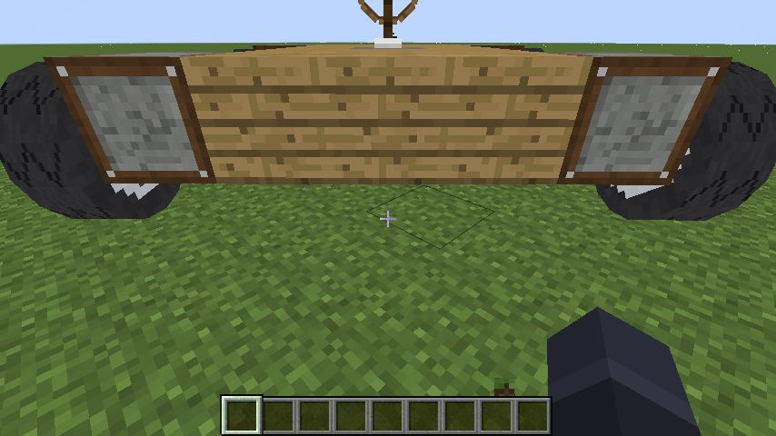
A car with tires on Axle Mounts
Building a car
Put Axle Mounts on your build, with a Tire on each (Small, Road, Large or Giant).
Add an engine: a Field Engine or Furnace Engine facing down into the Steering Wheel, or shafts to each axle.
Add a Steering Wheel and right-click it. The build becomes a car.
Driving
W/S drive and reverse, A/D steer. Front tires turn up to 30 degrees.
Let go of the keys to brake. A car with nobody at the wheel stays put.
Tires have springs, so the car rides over bumps and climbs steps.
Speed comes from engine RPM and tire size.
Seats carry passengers and turn with the car.
Bore Mount
Fit a Rock Cutter to a Bore Mount on the front. It cuts the 3x3 of blocks in front of it, dropping them into a chest next to it. A cutter lasts 2,048 blocks.
More
RFTools
Turn rotation into RF, build TARDIS interiors from dimension tabs, and show TARDIS and machine status on RFTools screens.
Feed it an RFTools dimension tab and RF to make a TARDIS Matrix. Use the matrix to summon a new TARDIS, or on an existing one to retune its interior. Potion effects, flight, Peaceful and No Animals carry over from the tab's dimlets; other dimlets are ignored.
Also: a mithril ingot and 4 coal become 4 diamonds in a basin over an artron battery (LOTR + TARDIS).
Screen modules
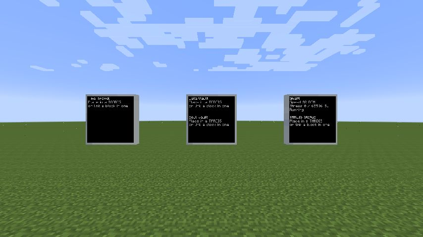
RFTools screens showing module output
Module
Shows
Kinetic Monitor
Speed, stress and capacity, jammed or overstressed
TARDIS Status
Level, artron, flying or landed, where and when
Data Vault
Items stored and % full (AE2)
Soul Vault
Souls stored
Time Travel
Destination time, fuel, paradox, escape cost
Sneak and right-click a block with the module to link it. Unlinked TARDIS modules report on the TARDIS the screen stands in.
More
Server performance
Tools for server owners that make riding into new land smoother.
Generating new land is the slow part of exploring in 1.7.10, and it happens on the server's main thread. Three tools help:
Idle pregenerator
While nobody is online, the server generates chunks in the background: areas you list in the config, then, with LOTR, the land around every waypoint and along every road. It stops the moment a player joins and picks up again later. /pregen status, pause, resume and reset control it.
Generate ahead
When a player moves fast through new land, the server generates the chunks just ahead of them in a cone, using whatever time is left over in each tick.
Mount slowdown
If a player on a horse or other mount is about to outrun the land being generated, the mount slows down smoothly until the land catches up, with a short chat note.